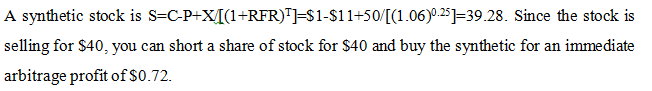

上午必考10题
1-Independence Objectivity
考题:
An analyst has been writing research reports on a firm for many years. As part of the analyst’s continuing research efforts, the analyst allowed the firm to fly him to the firm’s headquarters 500 miles away and put him up in the guest quarters the firm had for all corporate visitors. In the current year, the firm is planning a secondary share offering that coincides with the tenth anniversary of the firm going public. When the analyst arrived at the headquarters, he found a new set of high-quality golf clubs as a gift to him. On the golf clubs was the firm’s logo, and the firm was giving the clubs to all visitors this year in honor of the anniversary and the IPO. Based upon this information, Standard I ⟨B⟩, Independence and Objectivity, has
Abeen broken because of the value of the golf clubs and the value of the trip to the headquarters
Bbeen broken because of the value of the golf clubs
Cnot been broken because the trip is allowed and the firm is giving the clubs to all visitors
解析:

Solution: B
Modest gifts and entertainment are acceptable. Should commercial transportation be unavailable, modestly arranged travel may be accepted to participate in appropriate information gathering events.
2-Material nonpublic information
考题:
Claire Jones, CFA, is an analyst following natural gas companies in the United States. At an industry energy conference, the chief financial officer of Alpine Energy states that the company is interested in making strategic acquisitions. At a separate event, Alpine's head of exploration commented that he is bullish on natural gas production prospects within northeastern Pennsylvania. Jones is aware that Alpine currently has very little exposure to this region. She also knows another company in her universe, Pure Energy, Inc. is based in northeastern Pennsylvania and controls significant assets in the area. Pure Energy is highly leveraged, and Jones believes it will need to raise additional capital or partner with another firm to move to the production phase with their assets. Jones attempts to contact Alpine's chief executive officer with an unrelated question and is told he is unavailable because he is on a business trip to northeastern Pennsylvania. Jones updates her research on Pure Energy and then recommends the stock to Lisa Wong, CFA, a portfolio manager, who purchases significant positions in client accounts. The following week, Pure Energy announces it has entered into an agreement to be purchased by Alpine for a significant premium. Has either Jones or Wong most likely violated standards with regard to the integrity of capital markets?
AYes, Jones' recommendation is based on insider information
BYes, both Jones and Wong have acted on insider information
CNo
解析
Solution: C
Jones has used the mosaic theory to combine nonmaterial, nonpublic information with material public information.
3-Skewness
考题:
Two distributions have the same mean. One is negatively skewed, the other is positively skewed. Which of the following statements is the most accurate?
Athe median of negatively skewed distribution is greater than the median of positively skewed distribution
Bthe probability of extremely small values in negatively skewed distribution is greater than that in positively skewed distribution
Cnegatively skewed distribution has the same kurtosis as normal distribution
解析
Solution:A
As shown in the following figure, the median is smaller than the mean for the positive skew. In contrast, the median is larger than the mean for the negative skew.
4-Current account, capital account and financial account
考题:
During the last month, a food company located in the United States had the following transactions:
| Transaction |
Amount
(US$ millions) |
| Bought raw material from Indonesia |
50.0 |
| Sold food products to France |
65.0 |
| Received royalty fees from its branch in the United Kingdom |
0.5 |
| Donated to a charitable institution in Africa |
0.1 |
| Borrowed from a bank in Singapore |
2.0 |
| Paid legal fees to its German legal consultant company |
1.2 |
| Received interest coupon from its investment in Eurobonds issued in Luxembourg |
0.8 |
These transactions will most likely increase the U.S. current account by:)
A$14.5 million.
B$17.0 million.
C$15.0 million.
解析
Solution:C
Note that the borrowing from a bank in Singapore is not a current account transaction.
| Transaction |
Current Account
(US$ millions) |
| Bought raw material from Indonesia |
-50.0 |
| Sold food products to France |
65.0 |
| Received royalty fees from its branch in the United Kingdom |
0.5 |
| Donated to a charitable institution in Africa |
-0.1 |
| Borrowed from a bank in Singapore |
Omit |
| Paid legal fees to its German legal consultant company |
-1.2 |
| Received interest coupon from its investment in Eurobonds issued in Luxembourg |
0.8 |
| Total |
15 |
current account + capital account + financial account = 0
The current account measures the exchange of merchandise goods, services, investment income, and unilateral transfers (gifts to and from other nations). The current account balance equals the sum of exports minus imports, net interest income, and net transfer. 在BOP（国际收支平衡表）中，interest income 属于current account
The capital account consists capital transfer（债务豁免，移民） and net sales of non-produced\non-financial assets（版权，自然资源的买卖）.
The financial account measure net capital flows based on sales and purchases of domestic and foreign financial assets.(financial assets aboard 在国外金融资产and foreign-owned financial assets国外拥有的在国内的金融资产)
5-Revenue Recognition criteria
考题:
Under IFRS, company revenue should be recognized when:
AThere is an evidence of arrangement between the buyer and seller.
BCost can be readily measured.
CThe company receives cash flow from customers.
解析
Solution:B
Under IFRS: risk and reward is transferred, no continuing control or management over the goods sold, revenue can be readily measured, probable inflow of economic benefits, cost can be reliably measured (for service, the stage of completion can be measured)
Under GAAP: evidence of arrangement between the buyer and seller, product being delivered or service has been rendered, price is determined or determinable, reasonably sure of collecting money.
6-Impairment
考题:
Under IFRS, the carrying value of company’s inventory is $20,000, and the selling price in the market is $24,000. If the selling cost of the inventory is $3,000, the company should:
AWrite up its inventory by $1000 and add a $1,000 gain in the income statement.
BNot do any change in its balance sheet and income statement.
CWrite down its inventory by $1000 and add a $1,000 loss in the income statement.
解析
Solution:B
Net Realizable Value = 24,000 – 3,000 = 21,000
Historical cost < NRV
Do not need to change its balance sheet and income statement.
7-NPV & IRR
考题:
Two mutually exclusive projects have conventional cash flows, but one project has a larger NPV while the other has a higher IRR. Which of the following is least likely responsible for this conflict?
AReinvestment rate assumption.
BSize of the projects' initial investments.
CRisk of the projects as reflected in the required rate of return.
解析
Solution:C
Conflicting decision rules based on the NPV and IRR methods are related to the reinvestment rate assumption, the timing of the cash flows, or the scale of the projects. Differing required rates of return are not related to conflicting NPV and IRR decisions.
8-EMH
考题:
Which of the following inferences concerning market efficiency most accurate?
AFully exploitable over and under-reactions often occur in efficient markets.
BMarket pricing anomalies and behavioral biases are contrary to the existence of market efficiency.
CIf a market is semi-strong form efficient, neither technicians nor fundamental analysts can expect to consistently earn abnormal returns.
解析
Solution:C
If securities markets are semi-strong form efficient, active trading to exploit price patterns or public information is not likely to generate abnormal returns. Thus, both technical and fundamental analyses become futile exercises.
9-Convexity
考题:
A bond manager tells one of his clients that larger convexity of a bond always benefits investors no matter how the price changes. Is this statement correct?
AYes
BNo, larger convexity is good when bond’s price rises.
CNo, larger convexity is good when bond’s price falls.
解析
Solution:A
With larger convexity, an investor gains more when bond’s price rises and losses less when price falls.
10-Hedge fund fee
考题:
United Capital is a hedge fund with $250 million of initial capital. United charges a 2% management fee based on assets under management at year end, and a 20% incentive fee based on returns in excess of an 8% hurdle rate. In its first year, United appreciates 16%. Assume management fees are calculated using end-of-period valuation. The hedge fund fee assuming the performance fee is calculated net of the management fee is closest to:
A8 million
B8.64 million
C9.8 million
解析
Solution:B
End of year capital = $250 million x 1.16 = $290 million
Management fee = $290 million x 2% = $5.8 million
Hurdle amount 8% of $250 million = $20 million;
Incentive fee = ($290 — $250 — $20 — $5.8) million x 20% = $2.84 million
Total fees to United Capital = ($5.8 + $2.84) million = $8.64 million
下午必考10题
1-Record retention
考题:
Masse, CFA, a domestic stock analyst, is working for a new hedge fund. Several weeks ago when he left the former company, he deleted the copy of records stored in his computer for his working convenience. Does Masse violate the standards?
A Standard V(C) Record Retention
BStandard IV(A) Loyalty
CNone of them.
解析:
Solution: C
Firm records or work performed on behalf of the firm that is stored in paper copy or electronically for the member's or candidate's convenience while employed, however, should be erased or returned to the employer unless the firm gives permission to keep those records after employment ends.
2-TWRR & MWRR
考题:
Time weighted rate of return
An analyst gathers the following information about the performance of a portfolio ($ millions):
| Quarter |
Value at Beginning of Quarter
(Prior to Inflow or Outflow) |
Cash Inflow (Outflow)
at Beginning of
Quarter |
Value at End
of Quarter |
| 1 |
2.0 |
0.2 |
2.4 |
| 2 |
2.4 |
0.4 |
2.6 |
| 3 |
2.6 |
(0.2) |
3.2 |
| 4 |
3.2 |
1.0 |
4.1 |
The portfolio’s annual time-weighted rate of return is closest to:
解析
Solution: A
The time-weighted rate of return is calculated by computing the quarterly holding period returns and linking those returns into an annual return as follows:
| Quarter |
Value at Beginning of Quarter
(Considering Inflows and Outflows) |
Value
($ millions)
at End of Quarter |
Holding Period Return |
| 1 |
2.0+0.2=2.2 |
2.4 |
(2.4-2.2)/2.2=9.09% |
| 2 |
2.4+0.4=2.8 |
2.6 |
(2.6 – 2.8) / 2.8 = –7.14% |
| 3 |
2.6 – 0.2 = 2.4 |
3.2 |
(3.2 – 2.4) / 2.4 = 33.33% |
| 4 |
3.2 + 1.0 = 4.2 |
4.1 |
(4.1 – 4.2) / 4.2 = –2.38% |
The time-weighted return (TWR) is found as follows:
3- Market and Firm Structure
考题:
Which market has a large number of firms and differentiated products?
A Perfect competition
B Monopolistic competition
CMonopoly
解析
Solution:B
4-LIFO reserve
考题:
A company selected LIFO method for its financial reports, and some information about its CXA financial report is given below (in million):
| Net revenue | 120 |
| COGS | 70 |
| Fixed cost | 25 |
| Change in LIFO reserve | 15 |
| Tax rate | 30% |
The company’s net profit margin under FIFO method is closest to:
解析
Solution:B
5-CFO Calculation
考题:
The following information is available from a company’s accounting records:
The operating cash flow is closest to:
A40,100,000
B46,300,000
C49,900,000
解析
Solution:A
6-WACC
考题:
An analyst gathered the following data about a company:

Assuming a 40% tax rate, what after-tax rate of return must the company earn on its investments?
解析
Solution:A
7-Golden Growth Model
考题:
An analyst observes that the current market price of a manufacturing company is 52 and recent dividend paid is 3.2. He estimates the required rate of return by Fama-French model and the result is 9%. What is sustainable growth rate of this company?
解析
Solution:A
g=2.68%
8-Durations
考题:
Which of the following statements is least accurate regarding the factors that affect the interest rate risk characteristics of an option-free bond?
AThe higher the yield, the greater the bond's price sensitivity to changes in interest rates.
BThe longer the bond's maturity, the greater the bond's price sensitivity to changes in interest rates.
CThe lower the coupon rate, the greater the bond's price sensitivity to changes in interest rates.
解析
Solution:A
Option-free bonds have positive convexity. The higher the yield to maturity, the lower the duration (and thus the lower the interest rate risk).
9-Put-call Parity
考题:
As with all arbitrage trades, you want to if put-call parity doesn’t hold (if the cost of a fiduciary call does not equal the cost of a protective put), then you buy (go long in) the underpriced position and sell (go short) in the overpriced position.
A stock is selling at $40, a 3-month put at $50 is selling for $11, a 3-month call at $50 is selling for $1, and the risk-free rate is 6%. How much, if anything, can be made on an arbitrage?
A$0 (no arbitrage).
B$0.28
C$0.72
解析
Solution:C

10-CAPM
考题:
The risk-free rate is 6% and the expected market return is 15%. An investor sees a stock with a beta of 1.2 selling for $25 that will pay a $1 dividend next year. If he thinks the stock will be selling for $30 at year end, he thinks it is:
AOverpriced, so buy it.
BOverpriced, so short it.
CUnderpriced, so buy it.
解析
Solution:C
Required rate=6+1.2(15-6) =16.8%
Return on stock= (30-25+1)/25=24%
Based on risk, the stock plots above the SML and is underpriced, so buy it.